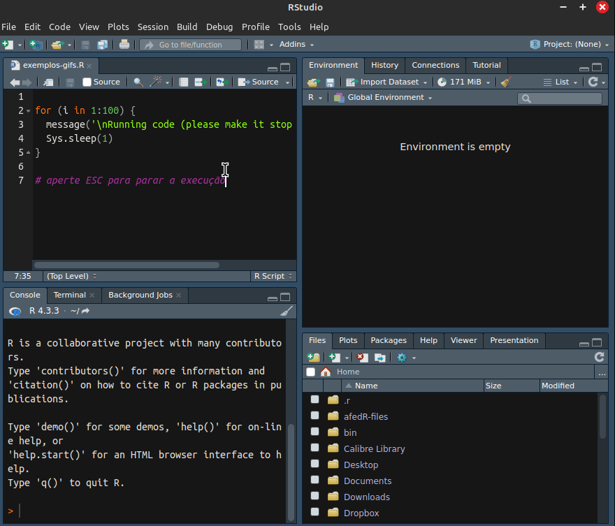

5 Interagindo com o Sistema Operacional e a Internet
Um dos grandes benefícios obtidos ao aprender programação é automatizar tarefas cotidianas com código. Na maioria das situações, iremos criar novas pastas, listar e remover arquivos, além de várias outras operações. Na internet, podemos realizar o download de arquivos via código, interagir com serviços online através de APIs (Application Programming Interface) ou repositórios de arquivos na nuvem, tal como o Google Drive.
5.1 Mostrando e Mudando o Diretório de Trabalho
Assim como outros softwares, o R sempre trabalha em algum diretório. O diretório de trabalho é onde o R procura arquivos para importar dados. É nesse mesmo diretório que o R salva arquivos, caso não definirmos um endereço no computador explicitamente. Essa saída pode ser um arquivo de uma figura, um arquivo de texto ou uma planilha eletrônica.
Em sua inicialização, o R possui como diretório padrão a pasta de documentos do usuário cujo atalho é o tilda ('~'). Como boa prática de criação e organização de scripts, deve-se sempre mudar o diretório de trabalho para onde o arquivo do script está localizado. Isso facilita a importação e exportação de dados de arquivos. Uma forma simples e direta de mudar o diretório de trabalho é utilizar o sistema de projetos do RStudio. Toda vez que um projeto é aberto, a sessão do R automaticamente será direcionado ao diretório do projeto (veja Figura 5.1).
Adicionalmente, para buscar o diretório atual de trabalho, basta utilizar a função getwd() :
# get current directory
my_dir <- getwd()
# print it
print(my_dir)R> [1] "/tmp/RtmpdPNhH9/book-compile__23b73546d7f6"O resultado do código anterior mostra a pasta onde este livro foi escrito. Esse é o diretório onde os arquivos do livro foram compilados dentro do ambiente Linux.
A mudança de diretório de trabalho é realizada através do comando setwd() . Por exemplo, caso quiséssemos mudar o nosso diretório de trabalho para uma pasta do Windows chamada C:/Minha pesquisa/, basta digitar no prompt:
# set dir
my_d <- 'C:/Minha Pesquisa/'
setwd(my_d)Caso o descobrimento da pasta de trabalho for difícil, uma estratégia eficiente é utilizar um explorador de arquivos, tal como o Explorer no Windows. Abra esse aplicativo e vá até o local onde quer trabalhar com o seu script. Após isso, coloque o cursor na barra de endereço e selecione todo o endereço. Aperte control+c para copiar o endereço para a área de transferência. Volte para o seu código e cole o mesmo no código. Atenção nesta etapa, o Windows utiliza a barra invertida para definir endereços no computador, enquanto o R utiliza a barra normal. Caso tente utilizar a barra invertida, um erro será mostrado na tela. Veja o exemplo a seguir.
my_d <- 'C:\Minha pesquisa\'
setwd(my_d)O erro terá a seguinte mensagem:
Error: '\M' is an unrecognized escape in character string..."A justificativa para o erro é que a barra invertida \ é um caractere reservado no R e não pode ser utilizado isoladamente. Caso precises, podes defini-lo no objeto de texto com dupla barra, tal como em \\. Veja no exemplo a seguir, onde a dupla barra é substituída por uma barra única:
# set char with \
my_char <- 'using \\'
# print it
message(my_char)R> using \A solução do problema é simples. Após copiar o endereço, modifique todas as barras para a barra normal, assim como no código a seguir:
my_d <- 'C:/Minha pesquisa/'
setwd(my_d)É possível também utilizar barras invertidas duplas \\ na definição de diretórios, porém não se recomenda essa formatação, pois não é compatível com outros sistemas operacionais.
Outro ponto importante aqui é o uso de endereços relativos. Por exemplo, caso esteja trabalhando em um diretório que contém um subdiretório chamado Data, podes entrar nele com o seguinte código:
# change to subfolder
setwd('Data')Outra possibilidade pouco conhecida no uso de setwd() é que é possível entrar em níveis inferiores do sistema de diretórios com .., tal como em:
# change to previous level
setwd('..')Portanto, caso estejas trabalhando no diretório C:/My Research/ e executar o comando setwd('..'), o diretório atual de trabalho viraria C:/, um nível inferior a pasta C:/My Research/.
Uma maneira mais moderna e pouco conhecida de definir o diretório de trabalho é usar as funções internas do RStudio. Este é um conjunto de funções que só funcionam dentro do RStudio e fornecem diversas informações sobre o arquivo sendo editado. Para descobrir o caminho do arquivo atual que está sendo editado no RStudio e configurar o diretório de trabalho para lá, você pode escrever:
my_path <- dirname(rstudioapi::getActiveDocumentContext()$path)
setwd(my_path)Dessa forma, o script mudará o diretório para sua própria localização. Apesar de não ser um código compacto ou elegante, ele é bastante funcional. Caso copie o arquivo para outro diretório, o valor de my_path muda para o novo diretório. Esteja ciente, no entanto, de que esse truque só funciona no editor de rotinas do RStudio e dentro de um arquivo salvo. O código não funcionará a partir do prompt ou se utilizar o vscode como sua plataforma de escrita de códigos.
Utilizando a pasta “Documentos”
Outro truque bastante útil para definir diretórios de trabalho no R é usar o símbolo ~. Esse define a pasta 'Documentos' no Windows, a qual é única para cada usuário. No ambiente Linux e Mac, o ~ define a pasta home. Portanto, ao executar setwd('~'), irás direcionar o R a uma pasta de fácil acesso e livre modificação pelo usuário atual do computador.
5.2 Listando Arquivos e Pastas
Para listar arquivos do computador, basta utilizar o função list.files() ou então a alternativa do tidyverse, fs::dir_ls() . O primeiro argumento define o diretório para listar os arquivos. Na construção deste livro foi criado um diretório chamado resources/figs, onde as figuras utilizadas no livro estão salvas são salvos. Pode-se verificar os arquivos nessa pasta com o seguinte código:
my_f <- fs::dir_ls(path = "resources/figs")
print(my_f[1:5])R> resources/figs/CAPA-Introducao-ao-R-ebook.jpg
R> resources/figs/Command_view.png
R> resources/figs/ExemploAjuda.png
R> resources/figs/Exemplo_inline_code.png
R> resources/figs/FaviconObserve que nesse diretório encontram-se vários arquivos com extensão .png. Destaca-se que também é possível listar os arquivos de forma recursiva, isto é, listar os arquivos de subpastas do endereço original. Para verificar, tente utilizar o seguinte código no seu computador:
# list all files recursively
fs::dir_ls(path = getwd(),
recurse = TRUE)O comando anterior irá listar todos os arquivos existentes na pasta atual e subpastas de trabalho. Dependendo de onde o comando foi executado, pode levar um certo tempo para o término do processo. Caso precisar cancelar a execução, aperte esc no teclado. Caso o retorno da chamada for um objeto vazio, então é porque estás trabalhando com o R em uma pasta vazia!
Para listar diretórios do computador, basta utilizar o comando list.dirs() ou então a função fs::dir_ls() com argumento type = "directory". Veja a seguir.
# list directories
my_dirs <- fs::dir_ls(".", type = "directory")
print(my_dirs)R> EOCE-Rmd _book backup gdfpd2_cache
R> gfred_cache resources site_libsNo caso anterior, o comando lista todos os diretórios do trabalho atual sem recursividade. A saída do comando mostra os diretórios que utilizei para escrever este livro. Nesse mesmo diretório, encontram-se os capítulos do livro, organizados por arquivos e baseados na linguagem Quarto. Para listar somente os arquivos com extensão .qmd, utiliza-se o argumento glob = ".qmd" da função fs::dir_ls() , como a seguir:
qmd_files <- fs::dir_ls(".", glob = "*.qmd$")
print(qmd_files)R> 00a-prefacio.qmd
R> 00b-agradecimentos.qmd
R> 01-introdução.qmd
R> 02-primeiros-passos-rstudio.qmd
R> 03-primeiros-passos-R.qmd
R> 04-pacotes.qmd
R> 05-interagindo-computador-internet.qmd
R> 06-objetos-basicos.qmd
R> 07-objetos-armazenamento.qmd
R> 08-importacao-exportacao-dados.qmd
R> 99-references.qmd
R> _BemVindo.qmd
R> index.qmdO texto *.qmd$ orienta o R a procurar todos arquivos que terminam o seu nome com o texto .qmd. Os símbolos '*'' e '$' são operadores específicos para o encontro de padrões em texto em uma linguagem chamada regex (regular expressions). O símbolo * diz para ignorar qualquer texto anterior a “.qmd” e $ indica o fim do nome do arquivo. Os arquivos apresentados anteriormente contêm todo o conteúdo deste livro, incluindo este próprio parágrafo!
5.3 Apagando Arquivos e Diretórios
A remoção de arquivos é realizada através do comando file.remove() ou então fs::file_delete() . O próximo código cria um arquivo .csv e depois o remove da memória do computador:
# create temporary file in docs folder
my_file <- '~/MyTemp.csv'
write.csv(x = data.frame(x=1:10),
file = my_file)
# delete it
fs::file_delete(my_file)Lembre-se que deves ter permissão do seu sistema operacional para apagar um arquivo.
Para deletar diretórios e todos os seus elementos, utilizamos unlink() ou então fs::dir_delete() :
# create temp dir
name_temp <- "TEMP"
fs::dir_create(name_temp)
# fill it with file
my_file <- fs::path(name_temp, "tempfile.csv")
write.csv(x = data.frame(x=1:10),
file = my_file)
fs::dir_delete(name_temp)A função, neste caso, não retorna nada. Podes checar se o diretório existe com fs::dir_exists() :
fs::dir_exists(name_temp)R> TEMP
R> FALSE
Cuidado com a remoção de arquivos e diretórios!
Tenha muito cuidado com comandos de remover pastas e arquivos no R, principalmente quando utilizar recursividade, isto é, quanto apagar todas as pastas e arquivos existentes no caminho desejado. Uma execução errada e partes importantes do seu disco rígido podem ser apagadas, deixando o seu computador inoperável. Saiba que o R realmente apaga os arquivos e não somente manda para a lixeira. Portanto, ao apagar diretórios inteiros, não poderás recuperar os arquivos facilmente.
5.4 Utilizando Arquivos e Diretórios Temporários
Toda vez que uma nova sessão do R é inicializada, o programa automaticamente cria uma pasta temporária no seu sistema. É nesse diretório que o R guarda quaisquer arquivos e pastas descartáveis que possam ser necessárias na sua sessão. No momento que a sessão do R é finalizada, tal como quando fechamos o RStudio, as pastas temporárias são removidas da memória do computador.
O endereço do diretório temporário de uma sessão do R é verificado com tempdir() ou fs::path_temp() :
my_tempdir <- fs::path_temp()
message(stringr::str_glue('My tempdir is {my_tempdir}'))R> My tempdir is /tmp/RtmpfGn0jkO último texto do diretório, neste caso RtmpfGn0jk é aleatóriamente definido e irá trocar a cada nova sessão do R.
A mesma dinâmica é encontrada para nomes de arquivos. Caso queira, por algum motivo, utilizar um nome temporário e aleatório para algum arquivo com extensão .txt, utilize tempfile() ou fs::file_temp() e defina o tipo de arquivo com as entradas da função:
my_tempfile <- fs::file_temp(ext = '.txt')
message(my_tempfile)R> /tmp/RtmpfGn0jk/file2c0ecfef94d.txtNote que o nome do arquivo – file2c0ecfef94d.txt – é totalmente aleatório e mudará a cada chamada da função. Note também que o arquivo temporário está localizado na pasta /tmp/RtmpfGn0jk.
5.5 Baixando Arquivos da Internet
O R pode baixar arquivos da Internet diretamente no código. Isso é realizado com a função download.file() . Veja o exemplo a seguir, onde baixamos uma planilha de Excel do site da Microsoft, e salvamos em um arquivo temporário:
# set link
link_dl <- 'go.microsoft.com/fwlink/?LinkID=521962'
local_file <- fs::file_temp(ext = '.xlsx') # name of local file
download.file(url = link_dl,
destfile = local_file)O uso de download.file() é bastante prático quando se está trabalhando com dados da Internet que são constantemente atualizados. Basta baixar e atualizar o arquivo com dados no início do script. Poderíamos continuar a rotina lendo o arquivo baixado e realizando a nossa análise dos dados disponíveis.
Um exemplo nesse caso é a tabela de empresas listadas na bolsa divulgada pela CVM (comissão de valores mobiliários). A tabela está disponível em um arquivo no site. Podemos baixar o arquivo e, logo em seguida, ler os dados.
# set destination link and file
my_link <- paste0(
'http://dados.cvm.gov.br/',
'dados/CIA_ABERTA/CAD/DADOS/cad_cia_aberta.csv'
)
my_destfile <- fs::file_temp(ext = '.csv')
# download file
download.file(my_link,
destfile = my_destfile,
mode = "wb")
# set locale options
my_locale <- readr::locale(
encoding = 'Latin1',
decimal_mark = ",")
# read it
df_cvm <- readr::read_csv2(my_destfile,
locale = my_locale,
col_types = readr::cols())
# check available columns
print(names(df_cvm))R> [1] "CNPJ_CIA" "DENOM_SOCIAL"
R> [3] "DENOM_COMERC" "DT_REG"
R> [5] "DT_CONST" "DT_CANCEL"
R> [7] "MOTIVO_CANCEL" "SIT"
R> [9] "DT_INI_SIT" "CD_CVM"
R> [11] "SETOR_ATIV" "TP_MERC"
R> [13] "CATEG_REG" "DT_INI_CATEG"
R> [15] "SIT_EMISSOR" "DT_INI_SIT_EMISSOR"
R> [17] "CONTROLE_ACIONARIO" "TP_ENDER"
R> [19] "LOGRADOURO" "COMPL"
R> [21] "BAIRRO" "MUN"
R> [23] "UF" "PAIS"
R> [25] "CEP" "DDD_TEL"
R> [27] "TEL" "DDD_FAX"
R> [29] "FAX" "EMAIL"
R> [31] "TP_RESP" "RESP"
R> [33] "DT_INI_RESP" "LOGRADOURO_RESP"
R> [35] "COMPL_RESP" "BAIRRO_RESP"
R> [37] "MUN_RESP" "UF_RESP"
R> [39] "PAIS_RESP" "CEP_RESP"
R> [41] "DDD_TEL_RESP" "TEL_RESP"
R> [43] "DDD_FAX_RESP" "FAX_RESP"
R> [45] "EMAIL_RESP" "CNPJ_AUDITOR"
R> [47] "AUDITOR"Existem diversas informações interessantes nestes dados incluindo nome e CNPJ de empresas listadas (ou de-listadas) da bolsa de valores Brasileira. E, mais importante, o arquivo está sempre atualizado. O código anterior estará sempre buscando os dados mais recentes a cada execução.
5.6 Interagindo com APIs
As APIs (Application Programming Interfaces) são sistemas que permitem a iteração entre diferentes softwares. O caso mais comum é um sistema local, seu computador, requisitando algum serviço da internet. As aplicações do uso de API com o R são imensas:
- Acesso a dados
- APIs fornecem acesso a uma grande variedade de dados, desde informações climáticas e notícias até dados de mercado e APIs de redes sociais.
- Integração com outras ferramentas
- APIs permitem integrar o R com outras ferramentas, como dashboards, plataformas de análise e sistemas de BI.
- Automação de tarefas
- APIs podem ser usadas para automatizar tarefas repetitivas, como a coleta de dados ou a geração de relatórios.
Aqui, vamos apresentar um exemplo simples de requisição de dados de um API do tipo json. O site https://api.sampleapis.com apresenta um API para requisição de um banco de dados atualizado sobre cervejas. Para importar os dados, é muito simples, basta usar função jsonlite::fromJSON() com o endereço do API.
url <- "https://api.sampleapis.com/beers/stouts"
df_beer <- jsonlite::fromJSON(url)
dplyr::glimpse(df_beer)R> Rows: 117
R> Columns: 5
R> $ price <chr> "$29.99", "$26.99", "$9.99", "$249.99", "$1…
R> $ name <chr> "Founders CBS", "Founders KBS (Kentucky Bre…
R> $ rating <df[,2]> <data.frame[20 x 2]>
R> $ image <chr> "https://www.totalwine.com/media/sys_mas…
R> $ id <int> 1, 2, 3, 4, 5, 6, 7, 8, 9, 10, 11, 12, 13, …Os dados retornamos já estão no formato de tabela (dataframe), com 117 linhas e 5 colunas. As informações incluem preço, nome, rating, e imagem. Saiba, porém, que os dados são atualizados frequentemente. Assim, a cada nova chamada de jsonlite::fromJSON() , teremos novos dados sobre cervejas a serem processados.
5.7 Exercícios
Q.1 - Crie um novo e mostre no prompt o diretório atual de trabalho (veja função getwd() , tal como em print(getwd())). Agora, modifique o seu diretório de trabalho para o Desktop (Área de Trabalho) e mostre a seguinte mensagem na tela do prompt: 'My desktop address is ....'. Dica: use e abuse da ferramenta autocomplete do RStudio para rapidamente encontrar a pasta do desktop.
Q.2 - Utilize o R para baixar o arquivo compactado disponível neste link. Salve o mesmo como um arquivo na pasta temporária da sessão (veja função fs::file_temp) e com a correta extensão zip.
Q.3 - Após resolver a questão anterior, utilize o R para descompactar o arquivo baixado para uma pasta temporária. Quantos arquivos estão disponíveis no arquivo compactado?
- 2
- 7
- 5
- 3
- 4
Q.4 - O comando Sys.getenv ('R_LIBS_USER') retorna a pasta onde o R guarda todos os arquivos dos diferente pacotes. Use função fs::dir_ls para listar todas as subpastas do diretório anterior.
Q.5 - O site https://sampleapis.com/ possui um API aberto ao público para a importação de dados sobre a série Futurama. Com base no seu conhecimento de R, baixe a lista de episódios da série utilizando o serviço do site. Quantas episódios estão disponíveis nos dados?